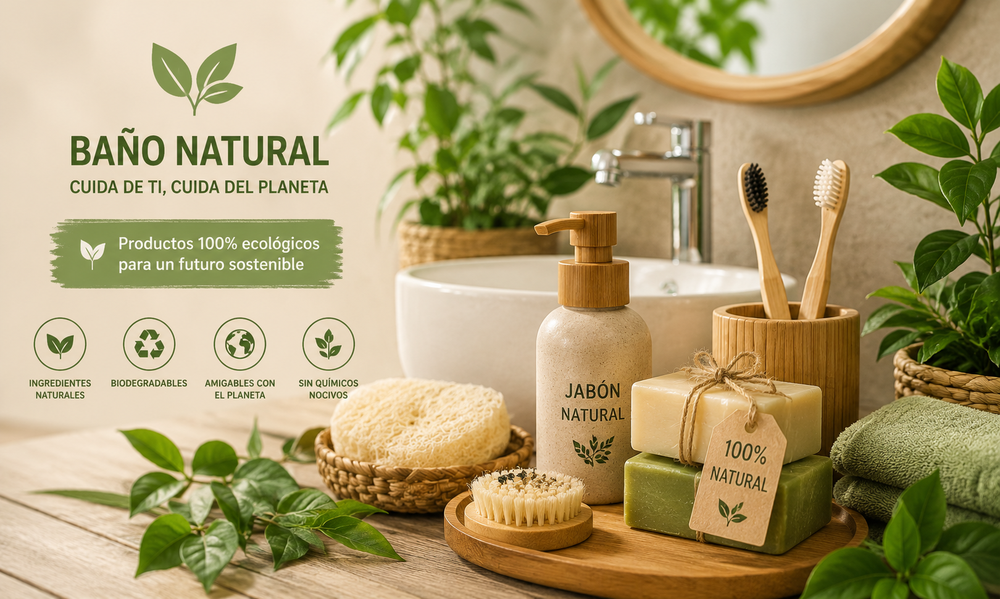

El baño es uno de los espacios que más residuos genera en silencio: cuchillas desechables, botellas de champú y envases de plástico que se acumulan mes tras mes. Probamos decenas de alternativas sostenibles y seleccionamos las cinco que realmente valen la pena, tanto por su desempeño como por su impacto ambiental.
No se trata de gastar más, sino de elegir productos que se usan una vez y duran años.
Estas alternativas no solo reducen la basura que generas: en la mayoría de los casos también resultan más económicas a largo plazo, ya que reemplazan compras recurrentes por un solo producto duradero.

Pequeños cambios como estos discos de algodón lavables eliminan un residuo cotidiano que rara vez notamos hasta que dejamos de generarlo.
Cepillo dental de bambú
El mango biodegradable se descompone en meses, a diferencia del plástico convencional que tarda siglos. Su rendimiento de limpieza es idéntico al de un cepillo tradicional, y algunas marcas ya ofrecen cerdas reemplazables para reducir aún más el desperdicio.
Jabón artesanal en barra
Sin empaque plástico y con ingredientes naturales, un jabón en barra bien formulado sustituye tanto al jabón corporal como, en muchos casos, al champú líquido. Además, suele durar más tiempo que su equivalente en botella.
Peine de madera y accesorios reutilizables
Los peines de madera no generan electricidad estática y son igual de duraderos que los de plástico, pero se biodegradan al final de su vida útil. Combinados con discos de algodón lavables, forman una rutina de baño prácticamente libre de residuos desechables.